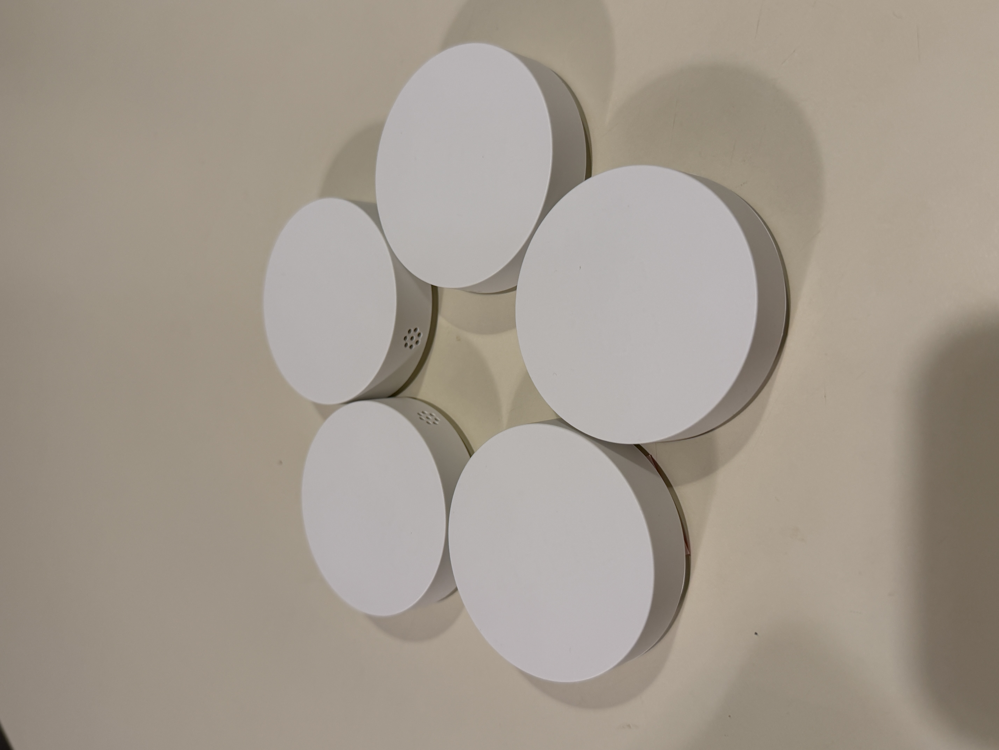
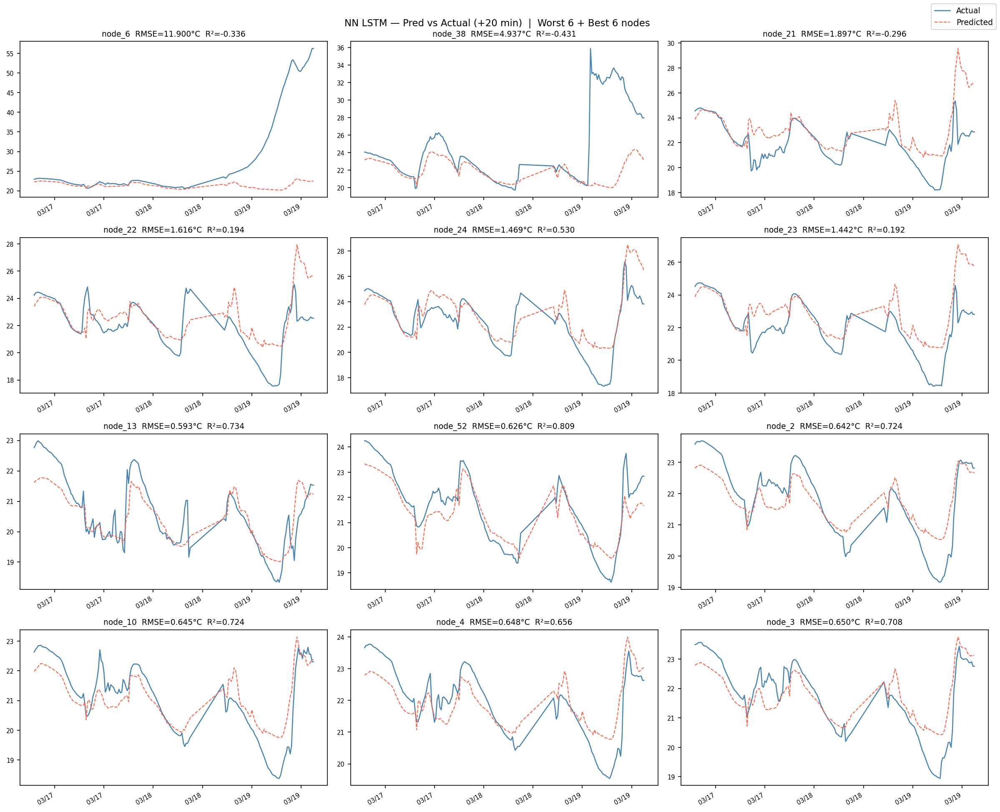
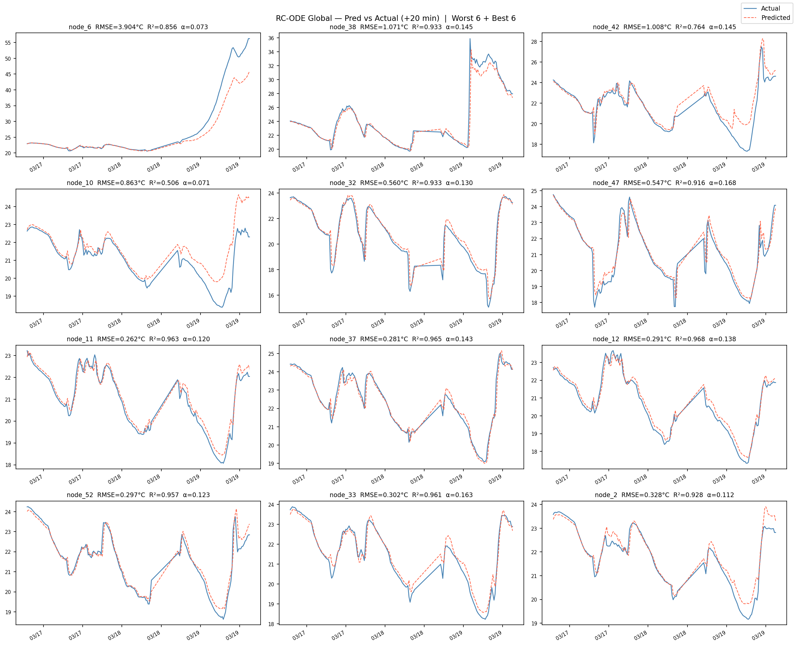
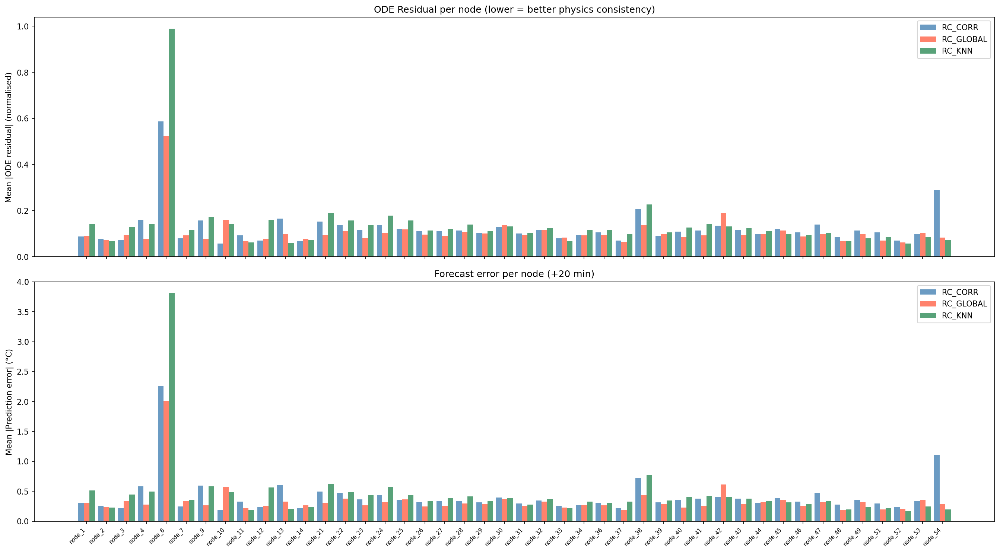
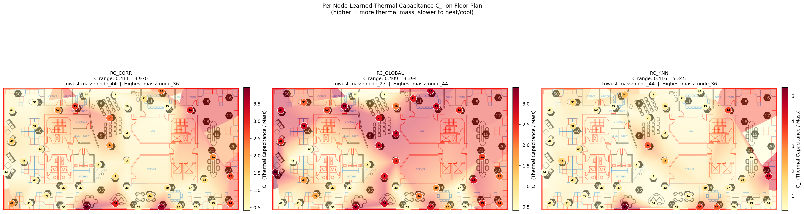
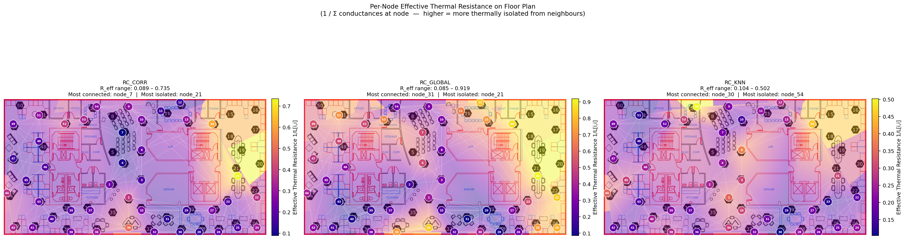
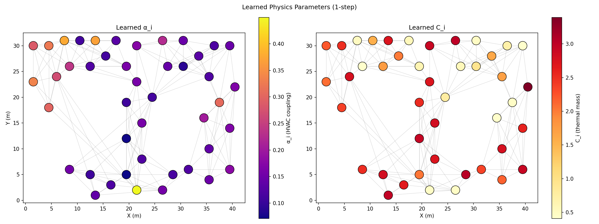
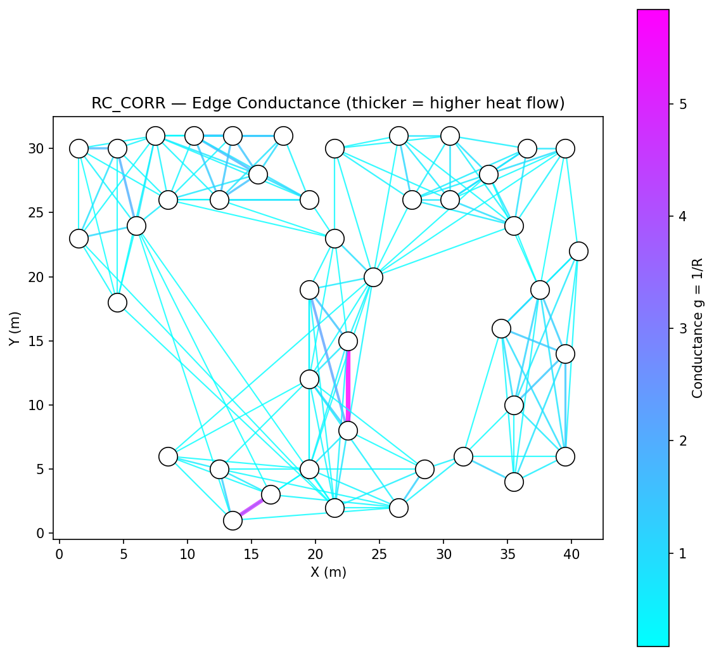

Using Physics-Informed Neural Networks (PINNs) and IoT sensor data to create real-time spatial thermal distribution models.
Bridging the gap between single-point thermostats and real-time spatial thermal awareness
Thermal distribution within a room is rarely uniform. Relying on a single wall thermostat provides inaccurate control data, and traditional CFD methods are too computationally expensive for real-time use.
A thermal digital twin using Physics-Informed Neural Networks (PINNs), combining real-world IoT sensor data with governing physics equations to produce accurate, real-time spatial temperature maps.
A faculty office room instrumented with 5 IKEA Matter temperature/humidity sensors, collecting continuous data via Home Assistant to train and validate the model.
CMU graduate students collaborating on thermal modeling research
Sensors calibration
Model training (PINNs)
Paper drafting
Sensors deployment
Data analysis
Presentation & logistics
Sensors testing
Programming support
Literature research
6-step plan from sensor procurement to model validation
Acquired 5 IKEA Matter temperature/humidity sensors. Configured data pipeline via Home Assistant with ~0.2 data points/min per sensor.
Executed rigorous co-location calibration over 18 hours. Built linear regression normalization curves achieving R² > 0.99 for all sensors. Reduced inter-sensor bandwidth by 27%.
Strategic placement of sensors within the faculty office to capture spatial thermal gradients.
Formulated RC-circuit thermal dynamics: heat conduction between nodes via learned graph conductances, HVAC injection modeled as latent heat sources, and ambient coupling loss term. Equations embedded as physics loss during training.
Trained four model variants on 44-node Berkeley office dataset (Feb–Mar 2004, 1,341 time steps at 20-min resolution): pure LSTM baseline, RC-ODE with KNN graph, RC-ODE with correlation graph, and RC-ODE with global latent driver.
Evaluated all models on held-out test set. Best PINN variant (RC-ODE Global) reduced RMSE by 59% and improved R² from 0.619 to 0.916 vs. the pure LSTM baseline. See the PINN Experiment section for full results.
IKEA Matter temperature and humidity sensors connected via Home Assistant

All 5 sensors were co-located in the same environment for 18 hours (Feb 10-11, 2026). Linear regression curves were fit to normalize each sensor to the ensemble mean, ensuring consistent readings before spatial deployment.
18-hour co-location test demonstrating sensor consistency after normalization
| Sensor | Equation | R² | MAE Before | MAE After |
|---|---|---|---|---|
| Bedroom 1 | y = 0.998x + 0.157 | 0.9957 | 0.0149°F | 0.0127°F |
| Bedroom 2 | y = 0.977x + 1.607 | 0.9952 | 0.0101°F | 0.0095°F |
| Kitchen | y = 0.990x + 0.721 | 0.9872 | 0.0227°F | 0.0208°F |
| Living Room 1 | y = 1.005x - 0.348 | 0.9954 | 0.0082°F | 0.0113°F |
| Living Room 2 | y = 1.013x - 0.946 | 0.9948 | 0.0101°F | 0.0103°F |
44 sensors · 18.6-day record (Feb–Mar 2004) · 1-hour resolution · Spatial temperature evolution across the Intel Berkeley Lab floor plan
Gaussian spatial interpolation using all 44 sensor readings. Colormap: blue (cool) → yellow (medium) → red (warm). Click Play to animate.
Benchmarking four model variants — from pure deep learning to physics-constrained ODEs — on a real multi-zone building dataset
The experiment uses the Intel Berkeley Research Lab temperature dataset, a real-world indoor climate record from a densely instrumented office space. Sensors were deployed on a 2D floor plan and logged every 20 minutes for approximately 18.6 days (February 28 – March 19, 2004). After alignment and preprocessing, the dataset contains 44 sensor nodes and 1,341 time steps, yielding roughly 59,000 individual temperature observations. Node IDs are non-contiguous (1–54, with some indices unused) reflecting the original lab deployment.
The forecasting task is 1-step-ahead prediction (+20 minutes): given a sliding window of 10 consecutive observations (200 minutes of context) across all 44 nodes, predict the temperature at the next time step for every node simultaneously. Two nodes (node 6 and node 38) show anomalous dynamics (likely HVAC vents or sensor malfunctions) and exhibit higher error across all models.
All three physics-informed variants are built on an RC-circuit analogy for heat transfer. Each sensor node i is modeled as a thermal capacitor with capacitance Ci [J/°C], connected to neighboring nodes via thermal resistances Rij [°C/W]. The continuous-time heat balance equation for node i is:
Where:
The RC-ODE Global model replaces per-node Qi with a shared latent driver:
Here αi is a per-node HVAC coupling strength and Tlatent is a global latent setpoint (both learned). This formulation is physically motivated: a central HVAC system drives all zones toward a common target, with each node's sensitivity controlled by αi. Time integration uses 4th-order Runge-Kutta (RK4) with Δt = 1/3 (normalized 20-minute step) for numerical stability.
This section walks through the complete training procedure step by step, from raw data to a trained model. It covers how the data is prepared, when and how physics enters the training loop, how the two losses are combined and weighted, what parameters get updated, and how over-fitting is controlled. The goal is to give enough detail that anyone can reproduce this from scratch.
All four models share the same data pipeline. The raw CSV is a 1,341×44 matrix of temperatures. Three operations happen before any model sees the data:
G_MEAN and standard deviation G_STD are computed from
the training rows only — this is critical to avoid data leakage from future timesteps.
Every temperature value is then mapped to T_norm = (T_raw − G_MEAN) / G_STD.
All model internals work in normalised space; results are denormalised at evaluation time.
x ∈ ℝ10×44, and step 11 is the regression target
y ∈ ℝ1×44.
Windows are created separately for each split (train / val / test) so no window straddles a split boundary.
The forward pass differs between the baseline and the PINN models:
Baseline (NN LSTM):
PINN models (KNN / Corr / Global):
The LSTM encoder is called once per batch, producing a single heat-source vector Q (or scalar T_latent) that is held constant while the ODE integrates forward. This is the key architectural decision: the encoder "reads" the 10-step history and decides how much HVAC forcing is currently active, then hands off to the physics integrator to propagate that forward in time.
This is the core PINN idea. The physics does not only constrain the one-step-ahead prediction. It also enforces that the ODE is satisfied at every transition within the known 10-step context window. This turns the input history into a dense field of physics supervision signals — 9 additional constraints per sample:
Crucially, the same Q and L are reused for all 9 transitions without re-running the encoder. This is intentional: Q represents the current HVAC state (which changes slowly), and L represents the fixed building topology (which does not change at all). The gradient of the physics loss then flows back through all 9 RK4 calls simultaneously, giving the encoder a strong signal to produce physically consistent heat-source estimates.
Geometrically, the physics loss is a manifold constraint: it pushes the model's state trajectory to lie on the solution manifold of the ODE. The data loss then constrains which specific trajectory on that manifold matches the observations.
At each training iteration the total loss is:
x — no ground-truth labels needed.
It is self-supervised physics regulation.
At inference time only the forward pass is used. The physics loss is a training-only regulariser; the ODE is still evaluated once (for the prediction step) but its residual is not penalised. The entire physics benefit is "baked in" to the learned parameters.
The physics weight is not applied from epoch 1. It is ramped in linearly:
Why not start with full physics? In early epochs the LSTM encoder is randomly initialised and produces arbitrary Q values. If the physics loss is immediately applied at full weight, its gradients overwhelm the data loss and the encoder is trained to satisfy the ODE with wrong Q values — it gets stuck in a local minimum where the physics is satisfied but the actual temperatures are wrong.
The ramp gives the encoder ~300 epochs to first learn a reasonable mapping from temperature history to heat sources (guided only by the data loss), and then gradually imposes the additional constraint that those heat sources must also be consistent with the physical ODE. Think of it as: first teach the model what the data looks like, then teach it to also obey the physics.
Every physical parameter in the ODE must be strictly positive (you cannot have negative thermal mass
or negative resistance). The models never directly learn R, C, or α — instead they learn
unconstrained real-valued proxies in log-space, then pass them through softplus:
Initialisation: log_R values are initialised to log(physical_distance + 1e-3),
so longer physical distances start with higher resistance — a physically informed warm start.
log_C and log_alpha are initialised to zero, meaning R = softplus(0) ≈ 0.69 at the start
(a neutral, mid-range initial value for capacitances).
T_set is initialised to 0 (i.e., the normalised mean temperature).
These parameters are registered as nn.Parameter objects and are included in the same
Adam optimiser as the LSTM encoder weights. They are updated by the same backpropagation pass —
there is no separate physics parameter optimisation step.
Building the graph Laplacian:
Given edge conductances gij = 1 / Rij, the weighted graph Laplacian L is:
This matrix multiplication replaces an explicit loop over edges and is fully differentiable with respect to log_R. PyTorch's autograd traces through the Laplacian construction and backpropagates gradients to each log_R parameter.
The RK4 integrator:
Forward Euler (T_next = T + DT · f(T)) accumulates error proportional to DT per step.
Over 9 transitions in the physics loss, Euler drift would corrupt the gradients.
RK4 gives fourth-order accuracy and is much more stable:
Each RK4 call evaluates the ODE right-hand side 4 times, so the physics loss evaluation involves 9 transitions × 4 RK4 stages = 36 ODE evaluations per batch, all of which contribute gradients back to log_R, log_C, log_beta / log_alpha, and the LSTM encoder parameters.
All parameters are updated together in a single optimizer.step() call.
The gradient of Ltotal flows through the following paths:
| Parameter | Shape | Updated via Ldata | Updated via Lphys | Role |
|---|---|---|---|---|
| LSTM weights & biases | ~44K params | ✓ (through forward pass) | ✓ (through physics_loss encoder call) | Encodes temperature history into Q / Tlatent |
| FC head weights | 128×44 or 128×1 | ✓ | ✓ | Projects LSTM hidden state to heat sources |
| log_Rij | one per graph edge | ✓ (through rk4_step in forward) | ✓ (through 9×4 ODE evals) | Thermal resistances; controls heat flow speed between nodes |
| log_Ci | 44 (one per node) | ✓ | ✓ | Thermal capacitances; controls temperature inertia at each node |
| log_β / log_αi | 1 scalar / 44 per-node | ✓ | ✓ | HVAC coupling strength to ambient / setpoint |
| T_set (KNN/Corr only) | 1 scalar | ✓ | ✓ | HVAC setpoint temperature (normalised) |
Gradient clipping is applied at max norm 1.0 before the optimiser step
(nn.utils.clip_grad_norm_(all_params, 1.0)).
This prevents the physics loss gradients from exploding when the ODE residuals are large early in training.
Baseline (NN LSTM)
PINN Models (KNN / Corr / Global)
Validation is always purely data-driven. The scheduler and early-stopping criterion both watch the data loss only on the validation set — the physics loss is never part of model selection. This ensures the best checkpoint is the one that predicts temperatures most accurately, not the one that most strongly satisfies the ODE.
Checkpointing. Every time the validation loss improves, the full model state is copied to CPU memory (not just the loss value). This includes the LSTM encoder weights and all physics parameters (log_R, log_C, log_beta / log_alpha, T_set). At the end of training, the best checkpoint is restored before evaluation.
Device handling. The code auto-selects CUDA (GPU) → MPS (Apple Silicon) → CPU, in priority order. Training times on CPU range from ~30 min (baseline) to ~3–4 hours (PINN at 5,000 epochs).
Type: Pure data-driven — no physics constraints
Architecture: 2-layer LSTM (256 hidden units) → dense head (512 units) → 44-node output
Parameters: ~650K
Training: 2,000 epochs, batch size 64, early stopping (patience 150), Adam optimizer
Input: 10-step window (all 44 nodes) → predict next step
This baseline establishes the performance ceiling achievable with deep learning alone,
without any knowledge of the underlying thermal physics.
Type: Physics-informed (PINN)
Graph: K=6 nearest neighbors by Euclidean spatial distance between sensor coordinates
LSTM encoder: Outputs per-node heat injection Qi
Physics: ODE residual enforced over context window; weight ramped 0→1.0 over first 300 epochs
Training: 5,000 epochs
Learned: Rij per edge, Ci per node, β (global), Tset
Uses the physical floor plan layout to define connectivity — nodes that are physically close share a thermal edge.
Type: Physics-informed (PINN)
Graph: K=6 nearest neighbors by Pearson correlation of training temperature signals
LSTM encoder: Outputs per-node heat injection Qi
Physics: Same ODE residual loss as KNN model
Training: 5,000 epochs
Learned: Rij per edge, Ci per node, β (global), Tset
Replaces geometry with data-driven connectivity — nodes whose temperature dynamics are historically correlated are assumed to be thermally coupled.
Type: Physics-informed (PINN) with interpretable HVAC model
Graph: Correlation-based (same as Model 3)
LSTM encoder: Outputs a single scalar latent driver Tlatent shared by all nodes
Physics: HVAC modeled as per-node attraction to global setpoint
Training: 5,000 epochs
Learned: Rij per edge, Ci per node, αi (per node), Tlatent
Physically the most principled: a central air system simultaneously conditions all zones, with spatially heterogeneous node sensitivities αi capturing different room configurations.
All models evaluated on held-out 15% test set (consecutive time windows, no shuffling). RMSE and MAE are in °C. Averages are computed over all 44 nodes. Node 6 and Node 38 are anomalous (HVAC vents / sensor artifacts) — they contribute to elevated overall averages.
| Model | Avg RMSE (°C) | Avg MAE (°C) | Avg R² | Median R² | RMSE Reduction vs. Baseline |
|---|---|---|---|---|---|
| NN LSTM (Baseline) | 1.324 | 0.914 | 0.619 | 0.722 | — |
| RC-ODE KNN | 0.721 | 0.446 | 0.868 | 0.926 | ↓ 45.6% |
| RC-ODE Correlation | 0.649 | 0.414 | 0.848 | 0.927 | ↓ 51.0% |
| RC-ODE Global | 0.538 | 0.339 | 0.916 | 0.944 | ↓ 59.4% |
Task: 1-step-ahead (+20 min) temperature forecast across all 44 nodes simultaneously. Training set: 70% of 1,341 time steps. Validation: 15%. Test: 15%.
Embedding the RC-ODE physics residual as a training loss term reduces average RMSE by 46–59% and lifts median R² from 0.72 to over 0.94 compared to the pure LSTM baseline. The constraint acts as a powerful regularizer in the low-data regime of 1,341 steps across 44 nodes.
Replacing the spatial KNN graph with a correlation-based graph provides a further improvement in RMSE. Temperature correlation captures functional coupling (shared HVAC zones, open doorways) that pure Euclidean distance does not, making the graph topology a design parameter worth tuning.
Reducing the LSTM encoder output from 44 per-node heat terms to a single global scalar improves both accuracy and interpretability. The global driver architecture forces the model to learn a physically meaningful building-wide thermal forcing, suppressing overfitting to node-specific noise.
The RC-ODE Global model learns spatially heterogeneous capacitance Ci and HVAC coupling αi values per node. Nodes near HVAC vents show high αi (strong coupling to the setpoint), while thermally massive nodes show high Ci. These parameters align with physical expectations and provide actionable building diagnostics.
Left: pure LSTM baseline. Right: RC-ODE Global. Across 12 nodes (worst 6 + best 6), the PINN tracks thermal dynamics considerably more tightly.
NN LSTM Baseline

RC-ODE Global (Best Model)

Decomposes the ODE-predicted temperature change into conduction flux, HVAC coupling, and ODE residual per node — confirming the physics is internalized rather than ignored.

Per-node Ci learned by the RC-ODE Global model. Higher capacitance indicates thermally massive regions (walls, structural elements) that resist temperature change.

Per-node equivalent thermal resistance (aggregated from all incident edges). High resistance nodes are thermally isolated; low resistance nodes are strongly coupled to their neighborhood.

Spatial heatmaps of the two key per-node physics parameters learned by the Global model. Left: αi (HVAC coupling strength) — nodes near supply vents show higher values. Right: Ci (capacitance) — reflects thermal mass distribution across the floor plan.

The thermal conductance gij = 1/Rij learned for each edge in the correlation graph. Thicker/brighter edges indicate stronger thermal coupling. The pattern reveals heat flow pathways that differ from simple spatial proximity.
